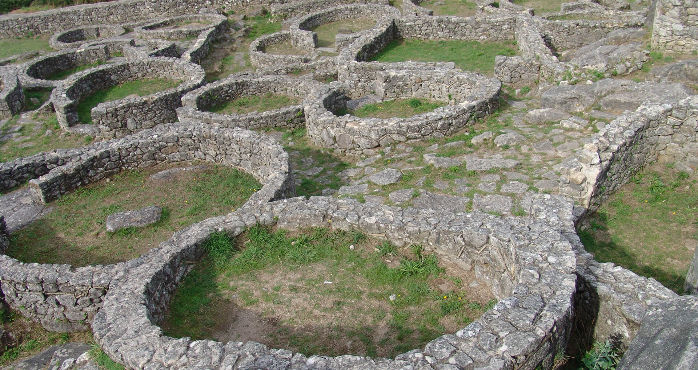
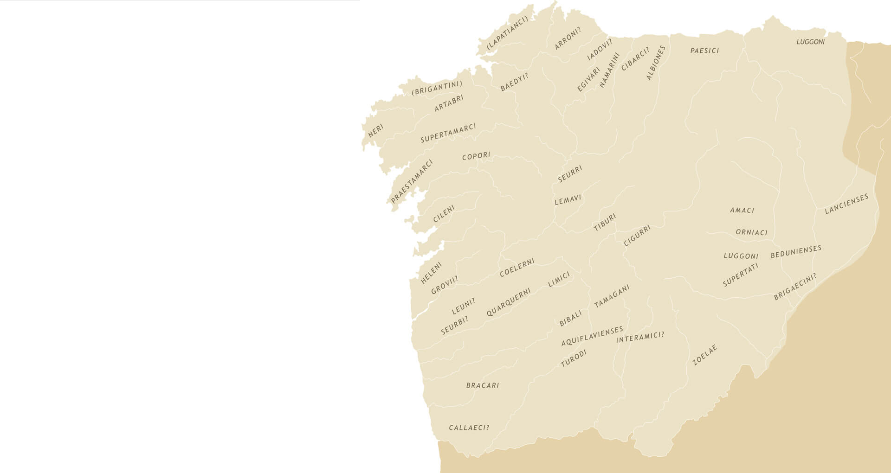
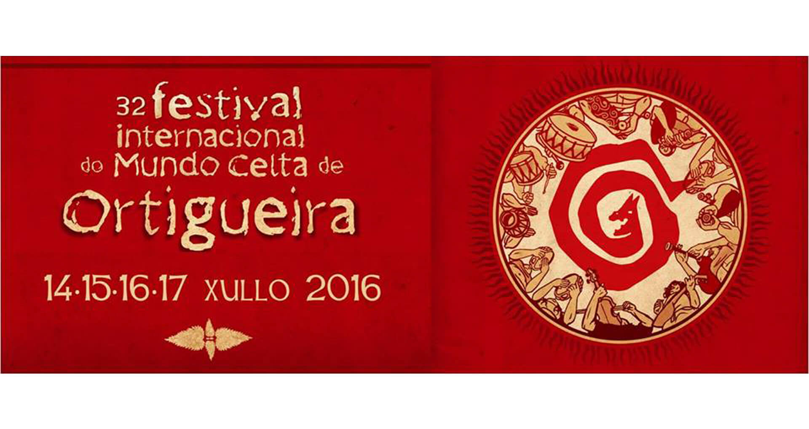

Los
castros y sus habitantes
Los
castros
Son poblados fortificados de la Edad del Hierro donde viven comunidades
que por primera vez son totalmente sedentarias. Surgen hace casi 3000
años, en el siglo IX a. C. y empiezan a abandonarse a finales del
siglo I d. C., un siglo después de la conquista romana.
Los castros son característicos del noroeste de Península Ibérica y
dieron lugar a lo que se definió como "Cultura Castreña". Aparecen por
toda Galicia, una amplia extensión del norte de Portugal y de Asturias.
Posiblemente su número supere los 3000 pudiendo llegar a los 4000.

Construcciones
del castro de Santa Tecla (A Guarda-Pontevedra)
A
pesar de que las características de los castros dependen de varios
factores, sobre todo el momento en que se construyen, en líneas
generales podemos decir que se trata de poblados con fuertes sistemas
defensivos (fosos, parapetos y murallas de piedra), que albergan en su
interior construcciones de formas redondas, ovaladas y en menor medida
cuadrangulares, construidas parcial o totalmente con piedra.
Su
tamaño medio suele variar entre 1 y 3 hectáreas con una población
entorno a 200 o 300 personas. En las últimas etapas aparecen poblados
de grandes dimensiones, los opidda (San Cibrán de Lás, Santa Tecla, San
Fins, etc) , en los que podrían vivir unas 2000 o 3000 personas.
Sus
habitantes
Los
castreños no tenían escritura hasta el momento que la adoptan de los
romanos, pero podemos reconstruir su modo de vida gracias al registro
arqueológico, a las crónicas que los autores clásicos escribieron sobre
ellos, a los estudios epigráficos, a la toponimia, etc.
Vivían
fundamentalmente de la agricultura y la ganadería, aunque
también aprovechaban los recursos de la pesca y marisqueo, e incluso de
la caza y de la recolección.
También
desempeñaron un papel importante en el modo de subsistencia de
estos poblados la minería (oro, estaño, cobre, plomo y hierro), la
metalurgia (hierro y bronce) y el comercio tanto a corta como a larga
distancia (poblaciones de la Península ibérica, norte de África,
Península Itálica, Islas Británicas, etc.)
Se
trataba de sociedades jerarquizadas, con una élite guerrera que
gradualmente fue adquiriendo mayor poder. Sabemos que su religión era
politeísta, existía gran cantidad de dioses tanto regionales como más
generales, pero desconocemos la forma de enterramiento de los
cadáveres. Se supone que incineraban los cuerpos, que los exponían para
que los animales hicieran el resto o que los tiraban al río acompañados
de sus armas.
En
cuanto a su organización, en un castro vivía un grupo de familias ,y
a la vez, varios castros formaban un populus. Todos estos populus
presentaban una serie de similitudes y afinidades culturales
(probablemente no reconocidas por ellos mismos), que provocaron que los
romanos los agruparan en una provincia distinta: Gallaecia. Así mismo,
denominaron a todos estos pueblos como "galaicos" , describiéndolos
como de origen celta...

Mapa
de los pueblos galaicos y límites de la Gallaecia, una de las
provincias en que los romanos dividieron la Península Ibérica.
¿Eran
celtas?
Esta
cuestión ha vertido ríos de tinta desde la aparición del "celtismo" en
la historiografía gallega de los siglos XIX y XX. Esta corriente
cultural, cuyos máximos inspiradores fueron Manuel Murguía y
posteriormente Vicente Risco, pretendía defender un pasado céltico y la
existencia de una raza celta en Galicia como ejes centrales de la
nacionalidad gallega.
En
contra de esta corriente surgió, hacia los años 60 de siglo pasado, una
nueva generación de historiadores que rechazaron cualquier vinculación
de los castros con lo celta. Algo diferente ocurrió entre la población
gallega donde si arraigó esta tradición céltica y se reinterpretó
otorgándole un componente folclórico y tradicional y, hasta a veces,
esotérico.
Así,
lo celta continúa muy vivo hoy en día en el plano popular: existe un
equipo de fútbol llamado "Celta de Vigo", numerosos festivales celtas,
merchandising de una Galicia celta, etc.

Cartel
del festival del mundo celta celebrado anualmente en Ortigueira (A
Coruña)